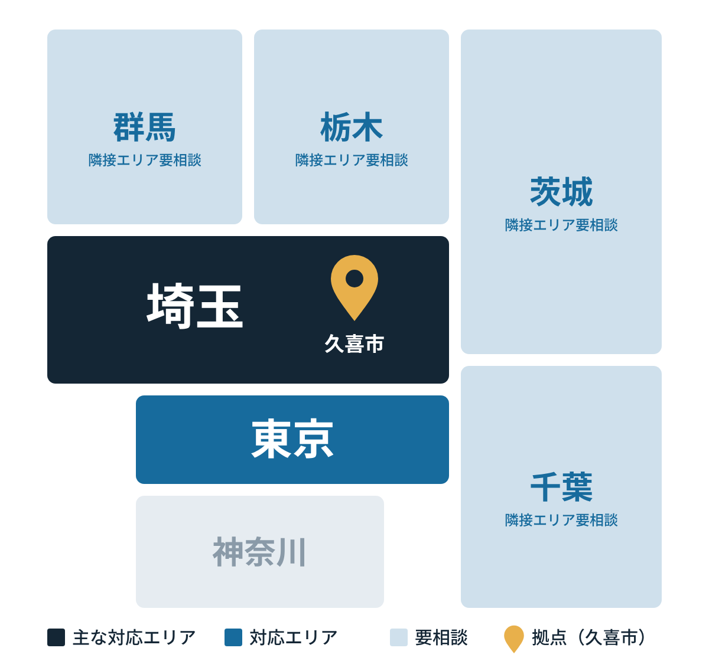

・空間を整える。空気を整える。
INcrein は、WHiTE. と FRESH. の2つの専門サービスで、清潔で快適な環境づくりを支えます。
SERVICE 01｜WHiTE. total cleaning
退去後の空室クリーニングから、クロス・床の張り替え、設備交換まで。次の入居につながる状態へ整えます。
税別
SERVICE 02｜FRESH. aircleanservice
ご家庭の壁掛けエアコンから、店舗・オフィスの業務用エアコンまで。分解して、汚れに合わせた洗剤で洗浄します。防カビコーティングは料金に含まれます。
税別
・INcrein が選ばれる理由
選ばれる
4つの理由
退去後のクリーニングから、クロスや床の張り替え、設備交換まで一括で対応します。依頼先をひとつにまとめられます。
現地の状態を確認してから、作業内容と費用をご提示します。ご依頼いただくかは、そのあとで決めていただけます。
店舗の休業日や閉店後の夜間など、営業に合わせた日程を調整します。お急ぎのご依頼もご相談ください。
管理物件をまとめてのご依頼や定期発注にも対応します。作業前後の写真と作業報告書もご用意できます。
FOR BUSINESS
退去後の清掃と原状回復、エアコンクリーニングを、まとめてご相談いただけます。
・私たちについて
生活環境が人の心や身体、そして人生に与える影響は決して小さくないと考えています。清掃は、ただ汚れを落とす作業ではありません。空間を整えることで、暮らしや気持ちを整え、次の一歩を踏み出せる環境をつくる。その想いを「清掃で救えるいのちがある」という言葉に込めています。
・ご相談から完了まで
所在地、ご希望の作業、希望時期をお知らせください。
2営業日以内にご連絡状態とご要望を確認し、作業内容と費用をご提示します。
無料ご納得いただいてから、施工日程を調整します。
確認した内容に沿って施工します。追加作業はご了承後に。
仕上がりをご確認いただき、お引渡しします。
写真・報告書・よくあるご質問
ご依頼の前に、よくいただく質問です。
どこまで対応してもらえますか？
退去立会いから、内装や設備の入れ替え工事、ハウスクリーニングまでまとめて対応します。
料金はどのように決まりますか？
物件の広さ、汚れの程度、仕様や数量、駐車条件によって変わります。現地確認のうえでお見積りをご提示します。お見積りと事前チェックは無料です。
定期発注や複数物件にも対応できますか？
対応できます。ボリュームや頻度に応じた条件もご相談ください。
報告書や写真はもらえますか？
作業前後の写真と作業報告書をご用意できます。
どんなエアコンでも対応できますか？
家庭用の壁掛けエアコンから、1〜4方向の天井カセット式などの業務用まで、幅広く対応しています。設置条件や製造から10年以上たった機種は、安全面から個別に判断します。
営業時間外に作業してもらえますか？
休業日や閉店後の夜間など、営業に合わせて調整します。事前にご相談ください。
・対応エリア

案件内容や施工体制によって対応できない場合があります。複数物件をまとめてのご依頼や法人のお客様は、エリア外でも対応できる場合がありますのでご相談ください。
・会社情報
CONTACT
依頼内容がまだ固まっていなくても構いません。物件・設備・希望時期など、分かる範囲でお知らせください。必要な確認事項はこちらで整理します。お見積りと現地チェックは無料、お問い合わせには2営業日以内にご連絡します。お電話でのご相談をご希望の場合は、電話番号とご都合のよい時間帯をフォームにご記入ください。こちらからお電話します。受付時間 9:00〜18:00（夜間・土日祝はご相談ください）